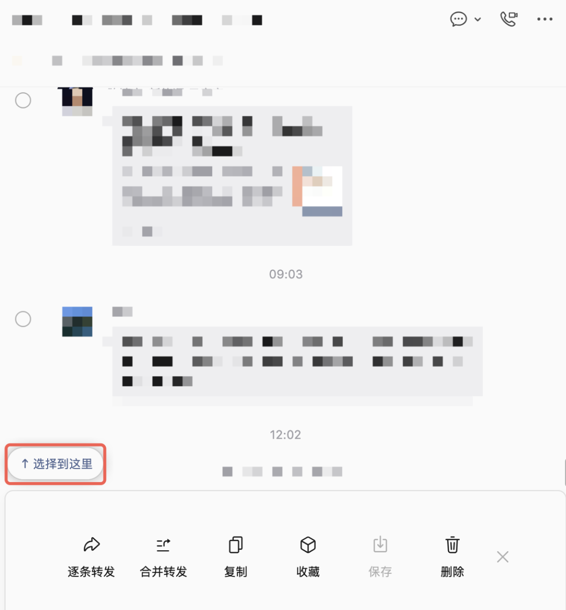
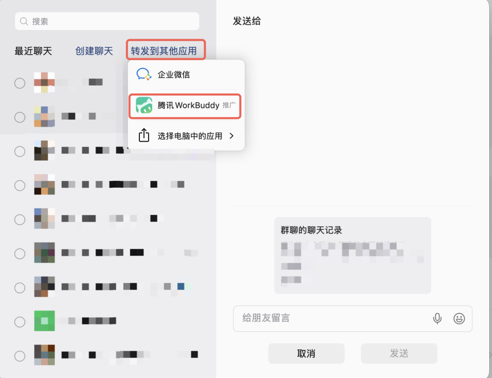
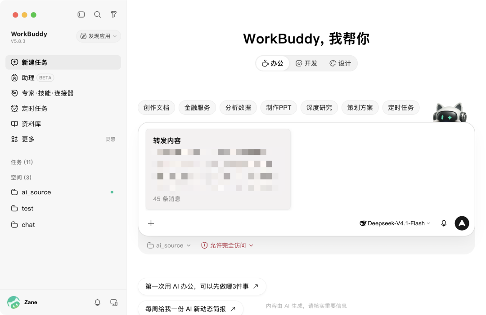

朋友群里聊了一晚上旅行计划，七嘴八舌两百条消息，有人发目的地、有人发酒店截图、有人说时间不行要改，到最后没人知道到底定了什么方案。你想整理一下，打开群聊从头翻，翻着翻着就不想干了。
老板在项目群里陆陆续续交代了一堆事，夹在闲聊和表情包中间，来来回回上百条。你需要把待办理出来，只能自己一条一条翻，生怕漏了什么。
信息都在微信聊天记录里，整理全靠人肉。费脑细胞，还容易漏。要是能把这些聊天记录直接丢给 AI，让它帮你提取要点、生成行程表、列出待办清单是不是很美好？
现在微信更新了一个功能可以做到。把聊天记录合并转发到腾讯 WorkBuddy，文字、图片、视频都能带过去，到了 WorkBuddy 里让 AI 直接处理。
操作只要三步，免费，几秒钟搞定。
第一步：批量选消息
以前转发聊天记录得一条一条勾选，消息多的时候很崩溃。现在微信加了选择到这里，在起始位置勾选一条消息，然后往下滑到结束位置，微信会出现这个提示，点一下，中间所有消息全部选中。

上百条消息两下就选完，不用一条一条勾了。
第二步：合并转发到 WorkBuddy
选完之后点合并转发，弹出的面板里选转发到其他应用，里面有腾讯 WorkBuddy。

第一次用需要做一次简单授权。微信会把文字、图片、视频打包成压缩包一起传过去，不只是纯文字。
第三步：让 AI 处理
打开 WorkBuddy，转发的聊天记录已经在输入框里了。这时候你可以直接告诉它你要什么：

比如那一堆旅行群消息，告诉它帮你整理成行程表，几分钟就可以把日期、地点、住宿全列好。
老板交代的任务，让它提取所有待办和关键决定，不用自己翻消息，而且也不用担心遗漏了。你也可以让它根据聊天内容直接改你现有的文档，省掉从零写的功夫。
这个功能藏在转发到其他应用里，需要微信最新版本，如果你平时经常要回翻群聊找信息，试试这条路。
如果这篇文章你觉得还不错，随手点个赞、在看、转发三连吧，如果想第一时间收到推送，也可以给我个星标⭐～谢谢你看我的文章，我们，下期再见。